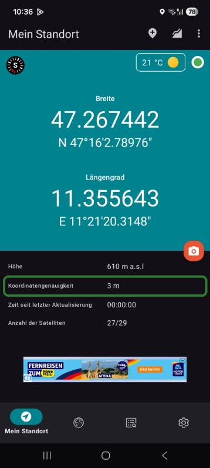

Anleitung: Fragebogen
Für Imker:innen im Rahmen der Datenerhebung
Ziel: Hier wird erklärt, wie der Fragebogen zum Projektstart abläuft und wie dabei der Standort Ihrer Völker erfasst wird. Außerdem erfahren Sie, wie der Evaluationsfragebogen am Projektende funktioniert.
Grundprinzip: Beide Fragebögen können Sie online über Google Forms oder händisch bzw. digital ausfüllen und per E-Mail an uns senden. Teil des ersten Fragebogens ist die Erhebung des Standorts Ihrer Völker mithilfe einer App. Wie sie funktioniert, erklärt Kapitel 2.
Vielen Dank für Ihr Engagement!
hanna.bliem@student.uibk.ac.at
1. Fragebogen zum Projektstart
Den Fragebogen zum Projektstart können Sie, wie bereits erwähnt, per Google Forms ausfüllen oder auf anderem Weg bearbeiten und anschließend per E-Mail an uns senden.
GPS-App
App installieren und am Bienenstand den Standort erfassen (siehe Kapitel 2).
Fragebogen
Themenblöcke Bewirtschaftung, Überwinterung und Standort ausfüllen.
Übermitteln
Per Google Forms absenden oder per E-Mail schicken.
Der Fragebogen besteht aus den Themenblöcken Bewirtschaftung, Überwinterung und Standort. Das Ausfüllen dauert rund 30 Minuten.
Wo finde ich den Fragebogen?
- Google Forms: Hier kommen Sie zum Fragebogen: Fragebogen öffnen
- Ausdrucken bzw. händisch ausfüllen: Wenn Sie diese Methode bevorzugen, laden Sie den Fragebogen hier herunter: ⬇ Fragebogen (PDF)
2. Installation und Anwendung der GPS-App
Mit der App „GPS-Koordinaten“ erfassen Sie den genauen Standort Ihres Bienenstands. Das dauert nur wenige Minuten.
App herunterladen
Suchen Sie im Play Store die App „GPS-Koordinaten“ und laden Sie sie herunter.
Am Bienenstand
Sobald Sie beim Bienenstand sind, aktivieren Sie die Standortfunktion auf Ihrem Handy und öffnen die App.
Genauigkeit abwarten
Die App bestimmt nun Ihren Standort. Warten Sie einen Moment, die Berechnung braucht kurz Zeit. Sobald die Koordinatengenauigkeit bei 5 m oder darunter liegt, machen Sie bitte einen Screenshot.

Beispiel-Screenshot: Die Koordinatengenauigkeit (grün markiert) sollte 5 m oder weniger betragen. Screenshot übermitteln
Laden Sie den Screenshot entweder direkt beim Ausfüllen des Fragebogens in Google Forms hoch oder senden Sie ihn anschließend per E-Mail.
3. Evaluationsfragebogen zum Projektende
Am Ende des Projekts bitten wir Sie um Ihr Feedback: Wie haben Sie den Versuch erlebt, und wie verständlich waren die Unterlagen? So können wir das nächste Projekt verbessern und Ihre Erfahrung einbeziehen.
Zeitpunkt
Nach dem Auswintern und der Rücksendung der Sensoren.
Fragebogen
Fragen zu Ablauf, Verständlichkeit der Anleitungen, Aufwand und zu Ihrer weiteren Teilnahme beantworten.
Übermitteln
Per Google Forms absenden oder per E-Mail schicken.
Der Evaluationsfragebogen funktioniert genauso wie der Fragebogen zum Projektstart. Das Ausfüllen dauert rund xx Minuten.
Wo finde ich den Evaluationsfragebogen?
- Google Forms: Hier kommen Sie zum Evaluationsfragebogen: Evaluationsfragebogen öffnen
- Ausdrucken bzw. händisch ausfüllen: Wenn Sie diese Methode bevorzugen, finden Sie den Evaluationsfragebogen im Ordner Formular.
Vielen Dank für Ihre Mithilfe!
Projekt „Testung isolierter Bienenbeuten“ · Institut für Zoologie, Universität Innsbruck · hanna.bliem@student.uibk.ac.at